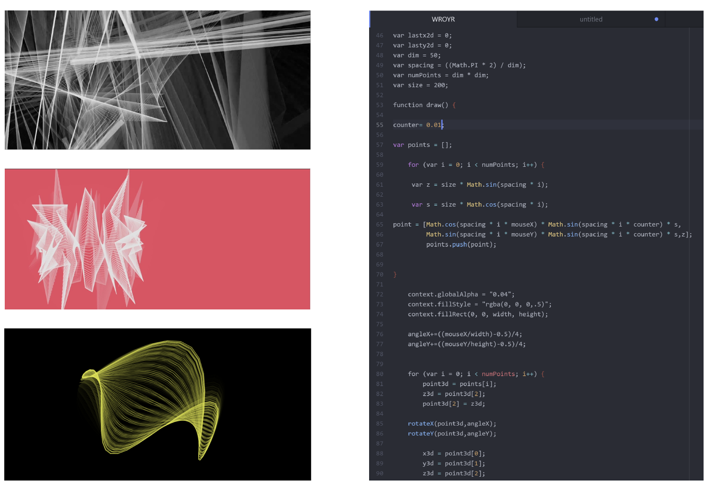
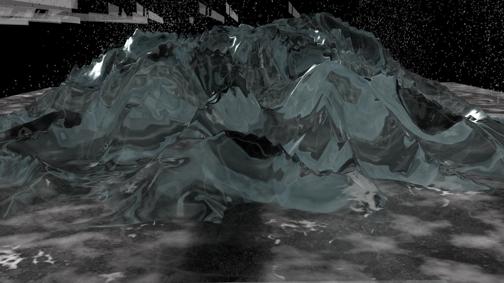

Air Pollution and Happiness: a geopolitical issue?
Data Analysis - January 2023
This enquiry will explore the relationship between different indicators of air pollution (PM2.5 & PM10
levels) and happiness (using scored ‘happy means' data), across the years 2011-2021. The spatial variation
of the relationship between pollution and happiness will be visualised
geospatially, using QGIS. The data collection,
cleaning, translation and
visualisation
were done as a team.

Breathworld
App Development - 2023
I created the whole user interface and user journey of the app and and have participated at
user research, impact analysis and competition research. The app prototype was pitched at Initiator VC and it is currently in the proccess of
developing a fully functional iOS app.

Through The Loop
Augmented Reality experimentations - 2021
A piece developed from a self portrait exploring the upside-down feeling of finding home in unfamiliar
spaces. Inspired by Francesca Woodman's experimental personality, I took my
photography further by using Augmented Reality and 3D models of personal items for a self-portrait.

Can you see mee now?
Interactive installation - 2021
Installation made in univeristy accommodation during the pandemic. I used LiDAR technology to create
cloud-point-based objects of people I spent 6 weeks in quarantine with and then projected them on
mirrored surfaces. My whole room in student accommodation turned into a light installation by night. The
trailer for
the
installation features a song produced by me.

JavaRoom
JavaScript interactions - 2021
An interactive user interface using the mouse as a control for speed, rotation and colour. This was part
of
a course offered by UAL
Creative Computing Institute on Machine Learning and JavaScript visualisations. I
then overlayed it with music and video montage of another room I was quarantining in.

Oxford Street Collage
3D collage - 2021
An exploration of public spaces and the making of intrusive shapes into playful ones. Materials and textures
extracted from
a walk down Oxford Street and compressed in a 3D collage, inspired by Craig Green’s use of polarized
light and iridescent materials in his A/W 2019
campaign.

Mint Trails
Architectural modelling piece - 2019
A piece modelled in Houdini from a workshop with artist
Refik Anadol and Zeynep Topal.
Developed with Houdini as a generator of artificial
spiderwebs and shape-shifting structures.

iCloud
Cinema4D journey - 2020
I am questioning identity through the current information architecture of data. By also looking at Rem Koolhaas’s theory ofJunk Space I explored
globalisation and with our shrinking world in mind, I discovered ways of looking at our localised identity
through systems of data.
